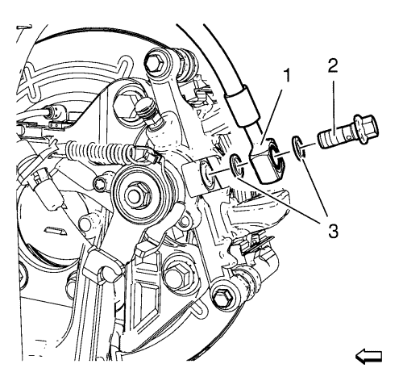
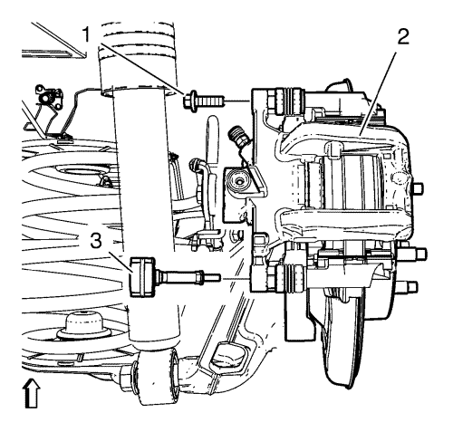
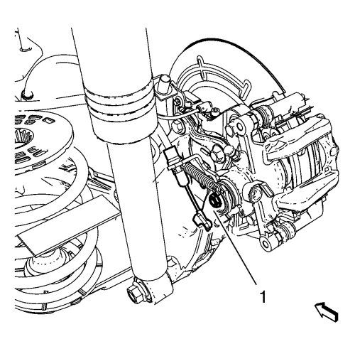

Sustitución de la pinza del freno trasero — con amortiguador
Procedimiento de desmontaje
Advertencia: Consulte Advertencia de líquido de frenos irritante en la sección Prólogo.
Precaución: Consulte Advertencia sobre los efectos del líquido de frenos sobre la pintura y los componentes eléctricos en la sección Prólogo.
- Compruebe el nivel de líquido del depósito del cilindro maestro del freno.
- Si el líquido de frenos está a mitad de camino entre el punto de llenado máximo y el nivel permitido mínimo no habrá que quitar nada de líquido de frenos del depósito.
- Si el líquido de frenos está a más cerca del punto de llenado máximo que del nivel permitido mínimo, quite líquido de frenos del depósito hasta que se quede en el punto medio.
- Elevar el vehículo y soportarlo de manera adecuada. Consultar Elevación y soporte en alto del vehículo .
- Desmonte la rueda del vehículo. Consultar Desmontaje y montaje de la rueda y el neumático .

- Extraiga el perno del latiguillo de freno (2) a las pinzas de freno.
- Extraiga el latiguillo de freno (1) de las pinzas de freno.
- Extraiga y deseche las 2 juntas de cobre del latiguillo de freno (3). Estas juntas pueden estar acopladas a las pinzas de freno y/o al extremo del latiguillo de freno.
- Tape o tapone la abertura en las pinzas de freno y el latiguillo de freno para evitar la pérdida de líquido y la suciedad.

- Extraiga el perno guía superior de la pinza de freno (1).
- Retire el amortiguador de vibración de la pinza de freno (3).

- Desmonte el cable del freno de mano de la palanca del freno de mano trasero (1).
- Extraiga la pinza de freno del soporte de la pinza de freno.
Procedimiento de montaje
- Inspeccione las fundas de corredera de la pinza para comprobar que no haya cortes, desgarros o deterioro. Si están dañados, sustituya las correderas y las fundas. Consultar Sustitución del hardware de la pinza del freno trasero .
- Monte la pinza de freno en el soporte de la pinza de freno.
Precaución: Consulte Precaución con las fijaciones en la sección Prólogo.
- Coloque el perno del pasador de la pinza de freno inferior (1) y apriételo a 28 N·m (20 lib. pie).
- Coloque el amortiguador de vibración de la pinza de freno (3) y apriételo a 28 N·m (20 lib. pie).
- Monte el cable del freno de mano en la palanca del freno de mano trasero (1).
- Desmonte las caperuzas o tapones de la apertura de la pinza de freno y el latiguillo de freno.
Nota: NO reutilice las juntas de cobre del latiguillo de freno.
- Monte NUEVAS juntas de cobre de latiguillo de freno (3) en el perno de latiguillo de freno a la pinza (2) y en el latiguillo de freno.
- Monte el latiguillo de freno y el perno del latiguillo de freno a la pinza de freno y apriete el perno a 40 N·m (30 lib. pie).
- Purgue el sistema de sistema de frenos hidráulicos. Consultar Purga de aire del sistema de frenos hidráulicos .
- Con el motor apagado, pise poco a poco el pedal del freno hasta aproximadamente 2/3 de su recorrido.
- Suelte lentamente el pedal.
- Espere 15 segundos y entonces repita los pasos 9 y 10 hasta conseguir un pedal de freno firme. Esto asentará correctamente los pistones de la pinza de freno y las pastillas de freno.
- Monte el conjunto de neumático y llanta. Consultar Desmontaje y montaje de la rueda y el neumático .
- Bajar el vehículo.
- Aplique y suelte la palanca del freno de mano 4 veces.
| © Copyright Chevrolet. Reservados todos los derechos |